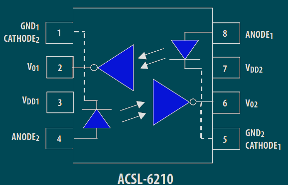
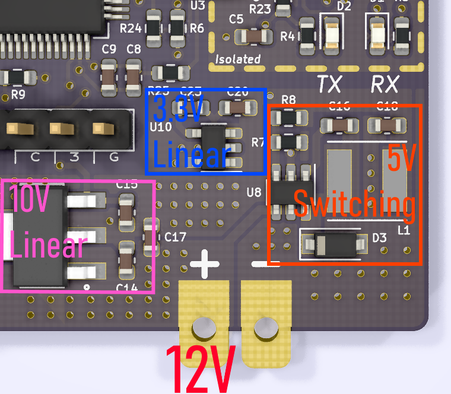

Kyle Hess - Bellevue, WA
{kind=link}
Overall Design
This system is based around four main components:
- ARM Cortex M4
- HIP4086 Three Phase N-Channel MOSFET Driver
- ACSL-6210 Optocoupler
- OMRON E6D Quadrature Rotary Encoder
The E6D Quadrature encoder outputs 24,000 pulses per revolution as well as a "zero" position flag.
Using one of peripheral timers in the ARM we can easily read the Quadrature output and increment a 32-bit counter.
The HIP4086 design was based on a previous project seen here.
The MOSFETs used with this design allow for driving motors with up to 50V and 50A (but probably not for long).
The BLDC motor used to test this design was the Maxon EC Motor 339268. This is a 12V, 1A (max) motor with Hall sensor feedback.
This was chosen due to the lower voltage requirement and the inclusion of Hall effect sensors.
The Hall sensors allow for easy determination of the motor position with digital logic.
The PCB uses a 4-layer design and was manufactured by OSHPark.
KiCAD Design Files & Firmware
Current Status & Interface
USB/UART Interface 🔌
Inorder to avoid possible damage to any connected devices (in the case of catastrophic failure)
I chose to isolate the USB/UART interface with a bi-directional logic gate optocoupler.
The USB signals are first passed through a USB-to-UART converter (FT230XQ).
The resulting UART Tx & Rx lines then go to the optocoupler which relays the signals to/from the ARM processor.
As the signals output from the optocoupler become inverted (pay close attenion to the schematic)
a dual-channel inverter was placed on one side of the optocoupler.
I wanted to keep the layout tight so I chose a 6-UFDFN package.
This was a particularly difficult part to solder...
Power Rails 🔋
Four different voltage levels were needed in this design.
12V: Main supply for motor current + others.
10V: Linear supply for the HIP4086.
5V: Switching supply for the Hall sensors and rotary encoder.
3.3V: Linear supply (from 5V) for CPU and digital IO.
Note - The USB interface provides it's own isolated power supply.
Known Issues & Future Design
The current design relies on multiplexing some complementary PWM signals as well as
HIGH and LOW signals into the MOSFET driver.
An oversight in the schematic meant that the MUX's didn't drive their output LOW when commanded, but rather put them in a high impedance state.
This led to the necessary inclusion of additional pull-down resistors to ensure a LOW state could be achieved.
Another small issue was missing the pull-up resistors for the Hall sensor outputs. Since these are open-drain signals they are required.
The biggest remaining design issue is some very high frequency noise on the Hall sensor outputs.
All three signals show very short (less than 50 ns) transients occuring at the PWM frequency of 50 kHz.
This noise is sometimes picked up by the ARM ISR that handles the Hall sensor signal changes.
My current theory is that the MOSFET switching is leading to large current spikes that are coupling into the rather long Hall sensor current loop.
I've mitigated this for now by roughly filtering the signals in the ISR.
This still isn't ideal as the program will be getting more interrupts than it should.
In the next revision I will need:
- Move or shorten the Hall sensor interface traces.
- Place an RC filter at the GPIO input.
- Include ferrite beads on the Hall sensor lines.